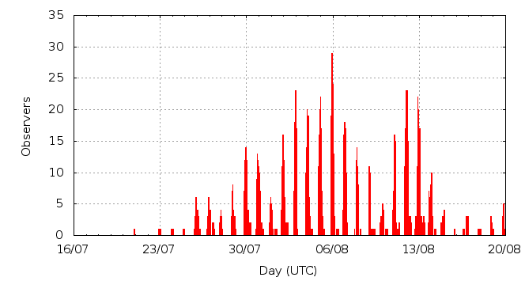

[ www.imo.net ]
This page shows automated results of the Perseids 2011, based on visual observations by volunteers astronomers collected through the report form of the International Meteor Organization (IMO). The information on this page is generated automatically; for scientific use please refer to manual analyses published in scientific journals (such as WGN). Send your feedback regarding this page to Geert Barentsen.
Page contents:
 11-13 August in detail (NEW)
11-13 August in detail (NEW)Page generated: 2011 October 6 at 23:44 UTC.
The graph below shows the ZHR (Zenithal Hourly Rate), which is the number of meteors an observer would see under a very dark sky with the radiant of the shower in zenith.
ZHRmax = 58 based on 6711 Perseids reported in 1510 intervals, assuming population index r = 2.0

| Time (UTC) | Solarlon | nINT | nPER | ZHR | Particle density | |
|---|---|---|---|---|---|---|
| 2011-07-20 21:59 | 117.683 | 2 | 0 | 8 | ±8 | 8 / 109·km3 |
| 2011-07-22 23:02 | 119.633 | 6 | 3 | 8 | ±4 | 8 / 109·km3 |
| 2011-07-23 23:12 | 120.595 | 5 | 2 | 3 | ±2 | 3 / 109·km3 |
| 2011-07-24 22:16 | 121.513 | 2 | 2 | 5 | ±3 | 5 / 109·km3 |
| 2011-07-25 23:53 | 122.532 | 10 | 20 | 7 | ±2 | 7 / 109·km3 |
| 2011-07-27 03:24 | 123.628 | 17 | 26 | 6 | ±1 | 6 / 109·km3 |
| 2011-07-27 22:21 | 124.383 | 8 | 20 | 7 | ±2 | 7 / 109·km3 |
| 2011-07-28 21:03 | 125.286 | 9 | 16 | 10 | ±2 | 9 / 109·km3 |
| 2011-07-30 00:08 | 126.366 | 50 | 83 | 6 | ±1 | 6 / 109·km3 |
| 2011-07-30 23:46 | 127.308 | 50 | 194 | 9 | ±1 | 9 / 109·km3 |
| 2011-08-01 00:42 | 128.301 | 31 | 49 | 7 | ±1 | 7 / 109·km3 |
| 2011-08-01 22:57 | 129.188 | 62 | 200 | 12 | ±1 | 11 / 109·km3 |
| 2011-08-02 03:53 | 129.385 | 18 | 85 | 10 | ±1 | 9 / 109·km3 |
| 2011-08-02 22:50 | 130.141 | 59 | 202 | 10 | ±1 | 9 / 109·km3 |
| 2011-08-03 01:01 | 130.228 | 32 | 118 | 11 | ±1 | 10 / 109·km3 |
| 2011-08-03 22:03 | 131.067 | 55 | 206 | 13 | ±1 | 12 / 109·km3 |
| 2011-08-04 00:50 | 131.178 | 48 | 200 | 11 | ±1 | 10 / 109·km3 |
| 2011-08-04 16:04 | 131.786 | 19 | 93 | 15 | ±2 | 14 / 109·km3 |
| 2011-08-04 23:01 | 132.063 | 40 | 205 | 15 | ±1 | 14 / 109·km3 |
| 2011-08-05 01:36 | 132.166 | 43 | 189 | 14 | ±1 | 13 / 109·km3 |
| 2011-08-05 21:53 | 132.975 | 51 | 204 | 15 | ±1 | 14 / 109·km3 |
| 2011-08-05 23:31 | 133.040 | 41 | 200 | 14 | ±1 | 13 / 109·km3 |
| 2011-08-06 02:04 | 133.142 | 34 | 121 | 11 | ±1 | 10 / 109·km3 |
| 2011-08-06 22:31 | 133.959 | 46 | 201 | 15 | ±1 | 14 / 109·km3 |
| 2011-08-07 00:33 | 134.040 | 40 | 201 | 15 | ±1 | 14 / 109·km3 |
| 2011-08-07 02:11 | 134.105 | 26 | 140 | 19 | ±2 | 18 / 109·km3 |
| 2011-08-07 23:31 | 134.956 | 41 | 204 | 18 | ±1 | 17 / 109·km3 |
| 2011-08-08 01:38 | 135.041 | 19 | 121 | 21 | ±2 | 20 / 109·km3 |
| 2011-08-09 01:26 | 135.991 | 36 | 151 | 17 | ±1 | 16 / 109·km3 |
| 2011-08-10 00:49 | 136.925 | 25 | 201 | 31 | ±2 | 29 / 109·km3 |
| 2011-08-10 09:42 | 137.279 | 15 | 53 | 17 | ±2 | 16 / 109·km3 |
| 2011-08-10 23:09 | 137.817 | 28 | 215 | 22 | ±1 | 21 / 109·km3 |
| 2011-08-11 00:58 | 137.889 | 21 | 201 | 38 | ±3 | 36 / 109·km3 |
| 2011-08-11 02:56 | 137.968 | 30 | 169 | 26 | ±2 | 25 / 109·km3 |
| 2011-08-11 22:09 | 138.736 | 67 | 205 | 25 | ±2 | 24 / 109·km3 |
| 2011-08-12 00:04 | 138.813 | 49 | 202 | 27 | ±2 | 26 / 109·km3 |
| 2011-08-12 01:06 | 138.854 | 38 | 235 | 34 | ±2 | 32 / 109·km3 |
| 2011-08-12 02:13 | 138.898 | 32 | 205 | 36 | ±3 | 34 / 109·km3 |
| 2011-08-12 14:30 | 139.389 | 43 | 201 | 57 | ±4 | 54 / 109·km3 |
| 2011-08-12 22:13 | 139.698 | 58 | 200 | 45 | ±3 | 43 / 109·km3 |
| 2011-08-12 23:58 | 139.768 | 36 | 203 | 54 | ±4 | 51 / 109·km3 |
| 2011-08-13 01:34 | 139.832 | 34 | 252 | 53 | ±3 | 50 / 109·km3 |
| 2011-08-13 04:37 | 139.953 | 31 | 201 | 58 | ±4 | 55 / 109·km3 |
| 2011-08-13 19:08 | 140.534 | 39 | 207 | 51 | ±4 | 48 / 109·km3 |
| 2011-08-14 01:58 | 140.807 | 21 | 119 | 34 | ±3 | 32 / 109·km3 |
| 2011-08-14 23:04 | 141.651 | 13 | 54 | 26 | ±4 | 25 / 109·km3 |
| 2011-08-16 20:10 | 143.456 | 1 | 2 | 11 | ±6 | 10 / 109·km3 |
| 2011-08-16 22:05 | 143.532 | 9 | 42 | 17 | ±3 | 16 / 109·km3 |
| 2011-08-17 22:00 | 144.490 | 5 | 28 | 18 | ±3 | 17 / 109·km3 |
| 2011-08-18 22:10 | 145.458 | 9 | 31 | 9 | ±2 | 9 / 109·km3 |
| 2011-08-19 21:14 | 146.383 | 6 | 29 | 10 | ±2 | 9 / 109·km3 |
The reported intervals are automatically added together into the bins shown above, based on the number of meteors and the distribution of the intervals. For each bin, the following parameters are computed:

| Time (UTC) | Solarlon | nINT | nPER | ZHR | Particle density | |
|---|---|---|---|---|---|---|
| 2011-08-11 20:45 | 138.680 | 5 | 17 | 32 | ±8 | 30 / 109·km3 |
| 2011-08-11 21:23 | 138.705 | 11 | 45 | 28 | ±4 | 26 / 109·km3 |
| 2011-08-11 21:51 | 138.724 | 14 | 40 | 32 | ±5 | 30 / 109·km3 |
| 2011-08-11 22:19 | 138.742 | 18 | 42 | 21 | ±3 | 20 / 109·km3 |
| 2011-08-11 22:58 | 138.768 | 15 | 49 | 25 | ±4 | 24 / 109·km3 |
| 2011-08-11 23:26 | 138.787 | 13 | 40 | 22 | ±3 | 21 / 109·km3 |
| 2011-08-11 23:50 | 138.803 | 10 | 43 | 38 | ±6 | 36 / 109·km3 |
| 2011-08-12 00:07 | 138.815 | 13 | 41 | 17 | ±3 | 16 / 109·km3 |
| 2011-08-12 00:19 | 138.823 | 7 | 40 | 37 | ±6 | 35 / 109·km3 |
| 2011-08-12 00:36 | 138.834 | 11 | 53 | 31 | ±4 | 29 / 109·km3 |
| 2011-08-12 00:50 | 138.843 | 14 | 94 | 37 | ±4 | 35 / 109·km3 |
| 2011-08-12 01:06 | 138.854 | 10 | 55 | 32 | ±4 | 30 / 109·km3 |
| 2011-08-12 01:21 | 138.864 | 9 | 49 | 30 | ±4 | 28 / 109·km3 |
| 2011-08-12 01:37 | 138.874 | 6 | 41 | 34 | ±5 | 32 / 109·km3 |
| 2011-08-12 01:52 | 138.885 | 11 | 77 | 40 | ±5 | 38 / 109·km3 |
| 2011-08-12 02:08 | 138.895 | 7 | 54 | 35 | ±5 | 33 / 109·km3 |
| 2011-08-12 02:25 | 138.906 | 7 | 45 | 38 | ±6 | 36 / 109·km3 |
| 2011-08-12 03:09 | 138.936 | 6 | 29 | 33 | ±6 | 31 / 109·km3 |
| 2011-08-12 05:05 | 139.013 | 1 | 8 | 44 | ±15 | 42 / 109·km3 |
| 2011-08-12 06:57 | 139.088 | 9 | 34 | 30 | ±5 | 28 / 109·km3 |
| 2011-08-12 08:27 | 139.148 | 5 | 31 | 47 | ±8 | 44 / 109·km3 |
| 2011-08-12 17:04 | 139.492 | 1 | 3 | 48 | ±24 | 45 / 109·km3 |
| 2011-08-12 17:47 | 139.521 | 10 | 40 | 93 | ±15 | 88 / 109·km3 |
| 2011-08-12 19:11 | 139.576 | 8 | 43 | 108 | ±16 | 102 / 109·km3 |
| 2011-08-12 20:15 | 139.619 | 10 | 43 | 64 | ±10 | 60 / 109·km3 |
| 2011-08-12 21:26 | 139.666 | 12 | 41 | 52 | ±8 | 49 / 109·km3 |
| 2011-08-12 22:08 | 139.694 | 19 | 45 | 41 | ±6 | 39 / 109·km3 |
| 2011-08-12 22:32 | 139.710 | 10 | 47 | 45 | ±6 | 43 / 109·km3 |
| 2011-08-12 22:50 | 139.722 | 9 | 42 | 51 | ±8 | 48 / 109·km3 |
| 2011-08-12 23:11 | 139.736 | 10 | 49 | 82 | ±12 | 77 / 109·km3 |
| 2011-08-12 23:35 | 139.752 | 11 | 40 | 41 | ±6 | 39 / 109·km3 |
| 2011-08-12 23:54 | 139.765 | 7 | 42 | 64 | ±10 | 60 / 109·km3 |
| 2011-08-13 00:14 | 139.779 | 5 | 42 | 80 | ±12 | 76 / 109·km3 |
| 2011-08-13 00:36 | 139.793 | 8 | 43 | 41 | ±6 | 39 / 109·km3 |
| 2011-08-13 01:09 | 139.815 | 6 | 44 | 63 | ±9 | 60 / 109·km3 |
| 2011-08-13 01:22 | 139.824 | 12 | 90 | 50 | ±5 | 47 / 109·km3 |
| 2011-08-13 01:41 | 139.836 | 9 | 70 | 63 | ±7 | 60 / 109·km3 |
| 2011-08-13 01:57 | 139.847 | 8 | 52 | 41 | ±6 | 39 / 109·km3 |
| 2011-08-13 02:17 | 139.860 | 9 | 83 | 62 | ±7 | 59 / 109·km3 |
| 2011-08-13 02:34 | 139.872 | 6 | 43 | 60 | ±9 | 57 / 109·km3 |
| 2011-08-13 03:01 | 139.890 | 3 | 3 | 25 | ±12 | 24 / 109·km3 |
| 2011-08-13 05:02 | 139.970 | 1 | 14 | 70 | ±18 | 66 / 109·km3 |
| 2011-08-13 06:30 | 140.029 | 6 | 12 | 77 | ±21 | 73 / 109·km3 |
| 2011-08-13 08:52 | 140.123 | 5 | 43 | 56 | ±8 | 53 / 109·km3 |
| 2011-08-13 10:08 | 140.174 | 7 | 47 | 81 | ±12 | 77 / 109·km3 |
| 2011-08-13 11:26 | 140.226 | 4 | 21 | 48 | ±10 | 45 / 109·km3 |
| 2011-08-13 18:30 | 140.508 | 2 | 17 | 116 | ±27 | 110 / 109·km3 |
| 2011-08-13 20:26 | 140.586 | 6 | 28 | 64 | ±12 | 60 / 109·km3 |
| 2011-08-13 22:10 | 140.656 | 10 | 42 | 49 | ±7 | 46 / 109·km3 |
| 2011-08-13 23:21 | 140.703 | 10 | 41 | 30 | ±5 | 28 / 109·km3 |
| 2011-08-14 00:32 | 140.750 | 5 | 40 | 43 | ±7 | 41 / 109·km3 |
| 2011-08-14 01:15 | 140.779 | 9 | 44 | 29 | ±4 | 27 / 109·km3 |
| 2011-08-14 02:04 | 140.811 | 6 | 36 | 42 | ±7 | 40 / 109·km3 |
| 2011-08-14 07:35 | 141.032 | 2 | 13 | 34 | ±9 | 32 / 109·km3 |
Data has been received from 139 observers in 31 countries. Thank you for your efforts!
Note: click on the map for an interactive version.

| Observer | Country | Teff | nPER |
|---|---|---|---|
| Ioan Agavriloaiei | Romania | 4.15h | 59 |
| Salvador Aguirre | Mexico | 0.25h | 0 |
| Mina Alizadah | Iran | 1.00h | 2 |
| Sima Alizadeh | Iran | 0.83h | 1 |
| Hamed Altafi | Iran | 1.00h | 1 |
| Rainer Arlt | Germany | 0.50h | 0 |
| Pierre Bader | Germany | 12.15h | 85 |
| Thierry Barrault | France | 1.32h | 7 |
| Ivana Belic | Serbia | 4.42h | 41 |
| Zora Beljic | Yugoslavia | 1.32h | 3 |
| Miroslav Blaho | Slovakia | 17.88h | 169 |
| Steven Brown | United Kingdom | 1.00h | 4 |
| Philippe Bury | France | 5.25h | 8 |
| Rafael Campillos Ladero | Spain | 5.71h | 28 |
| Matej Ciganj | Croatia | 3.30h | 37 |
| Daniel Cosovanu | Romania | 3.20h | 8 |
| Magdalena Cosovanu | Romania | 3.77h | 26 |
| Ilie Cosovanu | Romania | 1.73h | 16 |
| Anderson Dantas | Brazil | 6.97h | 28 |
| Natasja Delbar | Belgium | 3.87h | 37 |
| Jose Vicente Diaz Martinez | Spain | 0.92h | 3 |
| Olenici Dimitrie | Romania | 2.80h | 21 |
| Todor Dimitrov | Bulgaria | 11.24h | 22 |
| Balazs Fodor | Hungary | 1.97h | 18 |
| Stefan Fuks | Serbia | 29.74h | 255 |
| Adam Gaca | Poland | 1.52h | 16 |
| Christoph Gerber | Germany | 5.25h | 8 |
| Maria Gimova | Slovakia | 1.47h | 16 |
| William Godley | United States | 2.67h | 19 |
| Stevan Golubovic | Serbia | 8.08h | 82 |
| Sylvie Gorkova | Czech Republic | 20h | 82 |
| Mitja Govedic | Slovenia | 14.47h | 150 |
| Milan Gredelji | Croatia | 1.20h | 9 |
| Milan Gredelji | Croatia | 2.11h | 16 |
| Ludovic Grossard | France | 2.78h | 3 |
| Wayne T Hally | United States | 3.00h | 22 |
| Wayne T. Hally | United States | 5.67h | 27 |
| Vilem Heblik | Czech Republic | 3.65h | 23 |
| Serge Hemon | France | 1.89h | 5 |
| Barr Herrnstadt | Israel | 5.02h | 9 |
| Leo Holmberg | Finland | 2.97h | 15 |
| Dilyan Hristov | Bulgaria | 7.35h | 11 |
| Dominika Jackowska | Poland | 9.00h | 31 |
| Lars Jacobs | Belgium | 4.54h | 52 |
| Carl Johannink | Netherlands | 31.61h | 28 |
| Karoly Jonas | Hungary | 10.90h | 63 |
| Javor Kac | Slovenia | 29.06h | 423 |
| Jozef Karlik | Slovakia | 1.45h | 6 |
| Zdenek Komarek | Slovakia | 7.81h | 47 |
| Janez Kos | Slovenia | 8.08h | 153 |
| Andrija Kostic | Serbia | 29.66h | 318 |
| Milana Kostic | Serbia | 5.23h | 39 |
| Jakub Koukal | Czech Republic | 56h | 502 |
| Roman Kovalyk | Italy | 43.70h | 149 |
| Jan Lembregts | Belgium | 7.42h | 53 |
| Greet Lembregts | Belgium | 4.81h | 37 |
| Anna Levin | Israel | 3.25h | 11 |
| Anna S. Levina | Israel | 7.39h | 39 |
| Mike Linnolt | United States | 0.33h | 2 |
| Robert Lunsford | United States | 8.41h | 41 |
| Alexandr Maidik | Ukraine | 1.70h | 32 |
| Boris Maji? | Serbia | 2.57h | 63 |
| Boris Majic | Serbia | 9.01h | 92 |
| Pierre Martin | Canada | 24.75h | 140 |
| Mikhail Maslov | Russia | 4.86h | 67 |
| Marko Matijevic | Yugoslavia | 1.50h | 15 |
| Bruce Mccurdy | Canada | 4.25h | 63 |
| Samuel Michalansky | Slovakia | 1.55h | 20 |
| Vladislava Milic | Yugoslavia | 1.32h | 17 |
| An?elka Milovanovi? | Serbia | 1.33h | 29 |
| Barbara Milovanovi? | Serbia | 1.25h | 15 |
| Jakub Mirocha | Poland | 17.45h | 58 |
| Koen Miskotte | Namibia | 41.65h | 27 |
| Tohar Mor | Israel | 5.02h | 15 |
| Konstantin Morozov | Belarus | 5.98h | 36 |
| Maria Mraz | Slovakia | 3.32h | 28 |
| Marian Mraz | Slovakia | 4.49h | 19 |
| Maciej Myszkiewicz | Poland | 27.22h | 147 |
| Vitaly Nikolaev | Russia | 2.24h | 52 |
| Markku Nissinen | Finland | 1.10h | 8 |
| Dimitrie Olenici | Romania | 2.00h | 19 |
| Michal Palo | Slovakia | 4.49h | 12 |
| Ivana Papazyan | Serbia | 5.41h | 57 |
| Lovro Pavletic | Croatia | 2.20h | 30 |
| Aleksandar Pavlovic | Serbia | 4.91h | 14 |
| Francis Petit-coulaud | France | 4.51h | 17 |
| Patricija Pevec | Slovenia | 3.35h | 24 |
| Leonardo Pierobon | Croatia | 1.25h | 8 |
| Martin Pierre | Canada | 0.95h | 14 |
| Krzysztof Pieszczoch | Poland | 20.41h | 72 |
| Jelena Proki? | Serbia | 0.75h | 6 |
| Rok Pucer | Slovenia | 1.50h | 12 |
| Ella Ratz | Israel | 2.95h | 8 |
| Jurgen Rendtel | Germany | 22.39h | 133 |
| Bohus Rosko | Slovakia | 1.93h | 24 |
| Boris Rosko | Slovakia | 2.03h | 33 |
| Agnieszka Ruminska | Poland | 8.83h | 36 |
| Mikiya Sato | Japan | 0.50h | 11 |
| Branislav Savic | Serbia | 23.35h | 276 |
| Sergei Schmalz | Germany | 12.90h | 27 |
| Sandi Segota | Croatia | 1.25h | 5 |
| Ivan Sergey | Belarus | 2.38h | 24 |
| Ivan M. Sergey | Belarus | 11.73h | 56 |
| Anastasiya Simoshina | Ukraine | 0.22h | 1 |
| Urmas Sisask | Estonia | 4.00h | 67 |
| Marcin Skalski | Poland | 9.25h | 70 |
| Andrzej Skoczewski | Poland | 5.75h | 58 |
| Dasa Spaspjevic | Serbia | 13.80h | 92 |
| Sergey Stariy | Ukraine | 1.10h | 18 |
| Michal Stefancik | Slovakia | 3.70h | 12 |
| Anton Stipec | Croatia | 2.55h | 22 |
| Nikola Stojanovic | Serbia | 28.29h | 262 |
| Olivera Stojanovic | Croatia | 17.98h | 142 |
| Wesley Stone | United States | 5.45h | 80 |
| Martina Supak | Croatia | 4.48h | 34 |
| Hanjie Tan | China | 1.33h | 3 |
| Israel Tejera Falcón | Spain | 2.20h | 12 |
| Csilla Tepliczky | Hungary | 19.88h | 147 |
| Istvan Tepliczky | Hungary | 1.55h | 20 |
| Kazumi Terakubo | Japan | 0.50h | 6 |
| Miroslav Tirpák | Slovakia | 1.95h | 30 |
| Rafael Ruben Torregrosa Soler | Spain | 0.16h | 1 |
| Vanesa Ujcic Ozbolt | Croatia | 2.32h | 22 |
| Michel Vampouille | France | 0.49h | 0 |
| Wienie Van Der Oord | Israel | 12.91h | 65 |
| Peter Van Leuteren | Netherlands | 48.01h | 32 |
| Denis Vida | Croatia | 1.25h | 6 |
| Martin Vincencik | Slovakia | 1.47h | 8 |
| Marina Vlajnic | Serbia | 14.77h | 180 |
| Sabine Wächter | Germany | 1.16h | 5 |
| William Watson | United States | 20.15h | 113 |
| Xiaofan Wei | China | 1.70h | 0 |
| Oliver Wusk | Germany | 7.60h | 55 |
| Ilkka Yrjölä | Finland | 1.08h | 10 |
| Tjasa Zaletelj | Slovenia | 6.33h | 66 |
| Weizhou Zeng | China | 3.24h | 27 |
Create your own analysis. The files below can be opened using Excel:
per2011_rate.csv (number of meteors per interval per observer)
per2011_magn.csv (number of meteors per magnitude bin per observer)
The information on this page may be distributed freely provided credit is given to the International Meteor Organization (IMO) and, when possible, to the individual observers. The computer facilities to generate this page are provided by ESA/RSSD and Armagh Observatory.
References: